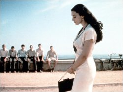

On video – Malena
Malena (2000)
M, 92 minutes, Italian with English subtitles
Directed by Giuseppe Tornatore
Starring Monica Bellucci, Giuseppe Sulfaro
“If your right eye causes you to sin, gouge it out … And if your right hand causes you to sin, cut it off and throw it away. It is better for you to lose one part of your body than for your whole body to go into hell.” (Matthew 5:29–30)
Sadly, the men of Castelcuto, a small Sicilian community, have something other than eternal destinations on their minds – something like the ravishing Signora Malena (Bellucci), town siren and wife of Nino Scordia. She’s so hot, she has them reading their newspapers bottom side up. Not surprisingly, the wives and girlfriends of these disloyal lechers are incensed by the effect Mrs Scordia has on their men and so, together, they gradually develop the mood of a lynch-mob and conspire to take the offensive against her.
Enter young, pubescent Renato Amoroso (Sulfaro). He, too, is besotted by Malena. At one point, he fantasises about telling her, “After your husband, the only man in your life is me.” Through the cobbled lanes he pedals his blue bicycle, ever in hope of an encounter, however distant or brief. At night, he breaks curfew to scale her roof and spy.
Cute though his behaviour seems, it is motivated by lust much like all his fellows. Yet he is different. To Renato, Malena has a heart and a soul, not merely a body. To the others, she is just eye candy.
As Renato shadows Malena, he discovers that her personal integrity equals her captivating beauty. While her husband serves overseas in Il Duce’s army, she faithfully awaits his return, keeping aloof from meantime Casanovas. It’s not until she hears of Nino’s death that she entertains new possibilities.
To their shame, the townsfolk fail to notice her loyalty. The men are blinded by lasciviousness, the women by envy and jealousy. Like an ant under a sun-filled magnifying glass, they burn her viciously with their ignorant gossip and false allegations. Eventually, everything is stripped from her – family, livelihood, dignity.
Through it all, young Renato stands firm and defends her honour at every turn. His loyalty matches hers. When things get rough, he enlists Mother Mary: “You must protect Malena Scordia from the town,” he pleads prayerfully.
Malena is, without a doubt, a seductive film – thanks mostly to an exotic setting, a Morricone score and a truly mesmerising leading lady. Unfortunately, though, the sensuality gets excessive. By bending to the temptation to undress what is best left clothed, Tornatore distracts the audience and so muddies his message and undermines its value.
A shame, really.